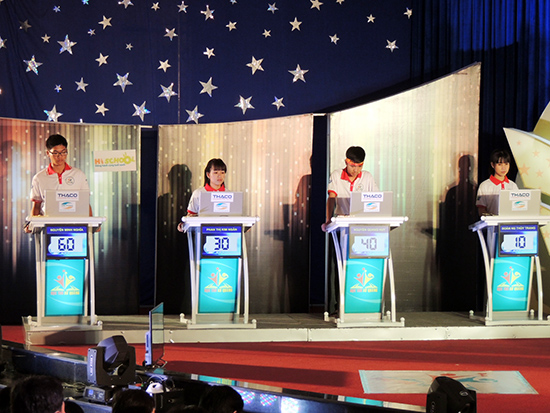

Lễ ra mắt game show Học trò xứ Quảng

Lần cập nhật cuối lúc Thứ tư, 25 Tháng 11 2015 11:14 Viết bởi Administrator Thứ tư, 25 Tháng 11 2015 09:42
Sáng nay 8.11, tại Trường THPT Chuyên Nguyễn Bỉnh Khiêm, Đài PT-TH Quảng Nam phối hợp với Sở Giáo dục - Đào tạo tổ chức lễ ra mắt game show “Học trò xứ Quảng” và tổ chức cuộc thi tháng đầu tiên của quý 1. Đây là sân chơi trí tuệ dành cho đối tượng là học sinh THPT trong toàn tỉnh. Bà Nguyễn Thị Thu Lan - Ủy viên Ban Thường vụ Tỉnh ủy, Trưởng ban Dân vận Tỉnh ủy, đại diện các sở, ban, ngành cùng đông đảo các thầy cô giáo, các bạn học sinh trong tỉnh đến dự lễ ra mắt và cổ vũ cho các thí sinh.

Phát biểu tại lễ ra mắt, ông Mai Văn Tư - Giám đốc, Tổng Biên tập Đài PTTH Quảng Nam nhấn mạnh: Mục tiêu của chương trình là tạo cơ hội cho các em học sinh phát triển toàn diện cả về trí tuệ, thể chất, tâm hồn, khơi dậy niềm tự hào là học trò trên mảnh đất địa linh nhân kiệt, giàu truyền thống hiếu học. Chương trình sẽ giúp ngành giáo dục tuyển chọn các em học sinh THPT tiêu biểu của tỉnh tham dự các kỳ thi tương tự của khu vực và toàn quốc. Ban cố vấn, Hội đồng xây dựng dữ liệu ngân hàng đề thi của chương trình là các thầy cô giáo nhiều kinh nghiệm trong ngành giáo dục tỉnh nhà; là các nhà nghiên cứu, các nhà khoa học, nhà văn, nhà báo, nhạc sĩ… trong và ngoài tỉnh tâm huyết với sự nghiệp xây dựng và phát triển tỉnh Quảng Nam. Game show “Học trò Xứ Quảng” gồm 13 cuộc thi trong năm (trong đó, có 9 cuộc thi tháng, 3 cuộc thi quý và 1 cuộc thi Chung kết năm). Mỗi năm sẽ có 52 lượt thí sinh của các Trường THPT trong toàn tỉnh tham gia các kỳ thi tháng, quý, năm. Cuộc thi chung kết năm sẽ được truyền hình trực tiếp trên sóng của Đài PT-TH Quảng Nam.
Ông Mai Văn Tư - Trưởng BTC (bên phải) và ông Hà Thanh Quốc - Phó Trưởng BTC bấm nút khởi động game show

Bốn thí sinh Minh Nghĩa, Kim Ngân, Quang Huy và Thùy Trang (từ trái qua) tranh nhau từng điểm số.
Về thể lệ cuộc thi, các thí sinh sẽ trải qua 4 phần thi: Tại phần khởi động, trong vòng 60 giây, mỗi thí sinh trả lời gói 10 câu hỏi, mỗi câu trả lời đúng được 10 điểm, trả lời sai không bị trừ điểm. Thí sinh trả lời hết gói câu hỏi hoặc hết thời gian quy định; Trong phần thi Tìm hiểu xứ Quảng, mỗi thí sinh chọn 01 trong 06 gói câu hỏi. Mỗi gói có 3 câu và thời gian trả lời mỗi câu hỏi là 10 giây. Đây là phần thi đặc biệt dành riêng cho các em với những nội dung về vùng đất và con người Quảng Nam; Sau phần thi Tìm hiểu xứ Quảng là phần thi Xứng danh đất học; Tại phần thi Về đích các thí sinh được đặt Ngôi sao hi vọng 1 lần, nếu trả lời đúng được gấp đôi số điểm của câu hỏi đó, trả lời sai sẽ bị trừ số điểm của câu hỏi đó… Đến tham gia cổ vũ, các bạn khán giả sẽ có cơ hội nhận được các phần quà thông qua việc trả lời các câu hỏi, hoặc bình chọn, nhắn tin…
Các cổ động viên nhiệt tình của Gameshow Học trò Xứ Quảng.
Ngay sau lễ ra mắt, cuộc thi tháng đầu tiên đã diễn ra với sự tham gia tranh tài của 4 thí sinh: Đoàn Nguyễn Thùy Trang (lớp 11/1 trường THPT Trần Quý Cáp), Nguyễn Quang Huy (lớp 11A1 trường THPT Huỳnh Thúc Kháng), Phan Thị Kim Ngân (lớp 11/10 trường THPT Núi Thành) và Nguyễn Minh Nghĩa (lớp 11 chuyên sử - địa trường THPT chuyên Nguyễn Bỉnh Khiêm).
Lãnh đạo tỉnh và BTC trao thưởng cho các thí sinh dự thi số đầu tiên.
Kết quả, em Nguyễn Minh Nghĩa (lớp 11, Trường THPT chuyên Nguyễn Bỉnh Khiêm) xuất sắc về nhất cuộc thi tháng đầu tiên của Game show Học trò xứ Quảng với 270 điểm. Em Nguyễn Quang Huy giải nhì, hai em Đoàn Nguyễn Thùy Trang và Phan Thị Kim Ngân đồng giải ba.
Video Lễ ra mắt Game show Học trò xứ Quảng
Video Game show Học trò xứ Quảng tháng thứ nhất - Quý 1
X.HIẾU – X.THỊNH - P.TRỊNH (baoquangnam.com.vn)
- 23/03/2016 14:13 - Hướng dẫn tuyển thẳng - ưu tiên xét tuyển vào đại …
- 23/03/2016 14:03 - Thông tư số 03-2016-TT-BGDĐT về việc sửa đổi bổ su…
- 17/03/2016 14:03 - Hướng dẫn tổ chức công tác tuyển sinh ĐH-CĐ hệ chí…
- 16/02/2016 14:51 - Hội trại Mừng Đảng - Mừng Xuân
- 27/11/2015 08:34 - Từ Huyền thoại Everest đến Học trò xứ Quảng
- 05/11/2015 16:30 - Triển khai tham gia cuộc thi tìm hiểu lịch sử văn …
- 04/11/2015 10:05 - Danh sách học sinh được tham gia bồi dưỡng thi HSG…
- 29/08/2015 08:55 - Thầy và trò trường THPT chuyên Nguyễn Bỉnh Khiêm c…
- 31/07/2015 09:22 - Hướng dẫn làm hồ sơ xét tuyển Đại học - Cao đẳng 2…
- 29/04/2015 16:09 - Đội tuyển HSG môn lịch sử Quảng Nam đạt tỉ lệ giải…